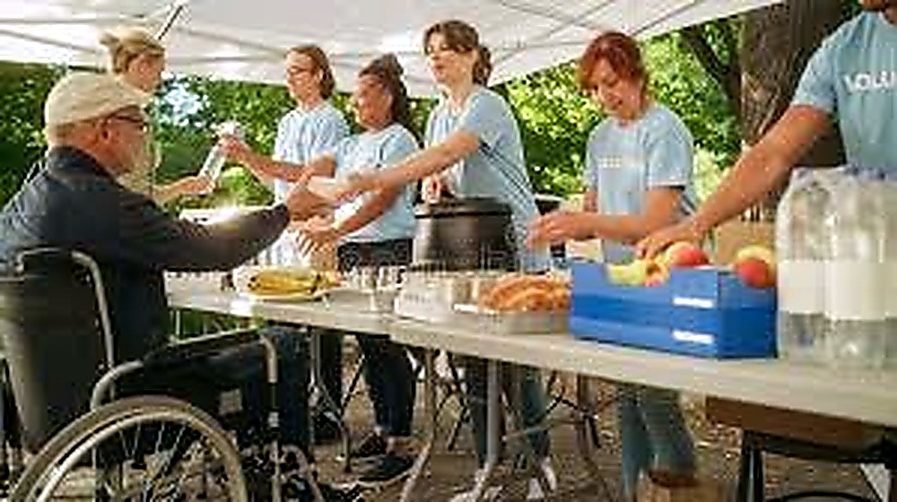

Stronger Together — Empowering Communities Through Action

Our Mission
To unite diverse communities in building sustainable futures by promoting education, health, and environmental responsibility. Our mission is to create practical, grassroots projects that uplift families, empower youth, and inspire collective action—turning compassion into lasting change.
Our Projects
We believe action speaks louder than words. Here’s how we’re making a difference:
Find a Project
Type a keyword, pick a category or change the order. The list updates instantly.
Loading content...
Our Intended Impact
Hope Connect Foundation measures success through meaningful community participation, improved access to opportunities, stronger local partnerships, and practical outcomes from each programme. We will use project feedback and documented results to improve our initiatives over time.
- Increase participation in community education and youth development.
- Support healthier and more environmentally responsible communities.
- Strengthen collaboration between volunteers, community groups, and partners.
- Document project outcomes and use feedback to improve future programmes.